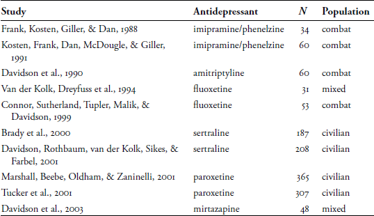
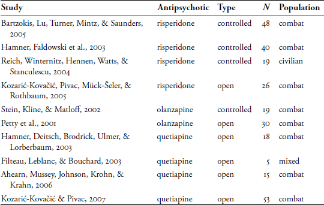
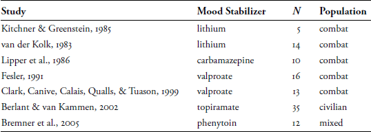

14
Psychopharmacology for Trauma-Related Disorders1
For most of the symptoms of complex PTSD and dissociative disorders, pharmacotherapy is not the primary treatment modality. However, as an adjunctive modality, the careful pharmacological treatment of patients with trauma-related disorders can be of considerable benefit. Perhaps because of the extreme dysphoria and multiple symptoms of these disorders, the use of medications is very common. Typically, pharmacotherapy for trauma-related disorders targets the autonomic hyperarousal symptoms of PTSD, but given the cycle of intrusive symptoms and hyperarousal triggering each other, pharmacologic treatment also often appears to be effective for the intrusive thoughts, flashbacks, and nightmares of PTSD. Medication is also used for the symptoms of depression, anxiety, agitation, mood lability, and sleep disturbance that often accompany PTSD and dissociative disorders. Although many medications have been used for trauma-related symptomatology, relatively few studies have demonstrated clear and consistent efficacy, so their use remains mostly empirical in nature (and informed consent with patients should reflect this information). This chapter discusses the pragmatic use of various classes of medication in trauma-related disorders and reviews the relevant literature and theory behind their use.
ANTIDEPRESSANT MEDICATIONS
The evidence base for the pharmacotherapy of PTSD includes randomized controlled trials, open trials, and case reports. The evidence concerning efficacy is strongest for the selective serotonin reuptake inhibitor (SSRI) antidepressants. The only two FDA-approved medications for the treatment of PTSD are sertraline (Zoloft) and paroxetine (Paxil). However, many other antidepressants have been empirically used and studied. Table 14.1 summarizes controlled studies that have shown efficacy for antidepressants in the treatment of PTSD (not included are open trials, case reports, and studies that showed no efficacy).
Table 14.1 Controlled Studies of Antidepressants in PTSD

Although the evidence base for the efficacy of antidepressants in PTSD appears solid, their usefulness in clinical practice is not so clear. Patients with complex PTSD and dissociative disorders do not seem to respond robustly to these agents, perhaps because the study populations had lesser degrees of trauma exposure, less chronicity, and fewer comorbid conditions. Another explanation may be that there is so much comorbidity in complex PTSD that patients subjectively remain intensely symptomatic even if the antidepressant agents are somewhat effective in treating the PTSD and affective symptoms. This may be why, in everyday practice, patients often report a modest improvement in their overall symptoms but rarely experience a remission of either PTSD or anxiety/depressive symptoms. Thus, when approaching the subject of medication, clinicians should caution patients that they may feel a modest rather than dramatic improvement. The doses of antidepressant medications should be tailored to the needs and responses of individual patients but are in the same general range as when these agents are used for depression or anxiety.
ANTIPSYCHOTIC MEDICATIONS
Neuroleptic or antipsychotic medications have long been used in complex PTSD patients in clinical settings to treat agitation, overactivation, and intrusive PTSD symptoms, as well as for chronic anxiety, insomnia, and irritability, but until recently, they have not been studied for these uses. Particularly because PTSD and dissociative disorder patients do not have true psychosis, and because antipsychotic medications have serious side effects such as tardive dyskinesia (a potentially irreversible movement disorder) and adverse metabolic effects (leading to obesity and elevations in blood levels of fasting glucose, triglycerides, and cholesterol), clinicians have been reluctant to acknowledge the extent to which these agents have been used in trauma-related disorders. The newer atypical antipsychotic medications—introduced in the 1990s—have been a welcome addition to options for pharmacologic treatment of PTSD because of their lower extrapyramidal and anticholinergic side effects, which make them much more acceptable to patients. However, these new agents have proved to have some risk of tardive dyskinesia, and some have the same adverse metabolic effects as older-generation antipsychotics, especially olanzapine (Zyprexa), which is associated with significant weight gain and metabolic changes in many patients. In recent years, a flurry of studies have demonstrated the usefulness of antipsychotic medications for PTSD as shown in Table 14.2 (included are controlled studies and open trials, but not case reports and studies that showed no efficacy).
Table 14.2 Studies of Antipsychotic Medications in PTSD

The Reich et al. (2004) study of risperidone (Risperdal) is of particular interest, as the study population was a group of women with chronic PTSD related to childhood physical, sexual, verbal, or emotional abuse. The change in PTSD symptoms was related to reduction of intrusive symptoms and hyperarousal, not the numbing symptoms. Although to date there are no controlled trials of quetiapine (Seroquel), the outcomes from the open label studies have been extremely promising, with substantial decreases in PTSD symptoms across large percentages of the study populations, in some cases in all three categories of symptoms—intrusion, numbing, and autonomic arousal. In another investigation related to the Hamner et al. (2003) study, quetiapine was effective in reducing PTSD-related sleep disturbances.
In clinical practice, risperidone and quetiapine have been the primary antipsychotic agents used for complex PTSD. They are generally given at bedtime in doses that are considerably less than when used for the treatment of active psychosis: risperidone 0.5 mg to 2 mg, and quetiapine 50 mg to 200 mg. The target symptoms are improved sleep and reduced anxiety on the following day. If necessary, this regimen can be supplemented by a small morning dose and as-needed doses of quetiapine during the day; risperidone is not recommended for as-needed dosing because severe orthostatic drops in blood pressure sometimes lead to an increased risk of falls.
ANTIANXIETY AND SEDATIVE/HYPNOTIC MEDICATIONS
Benzodiazepines—so-called minor tranquilizers, the class that includes lorezepam (Ativan),
clonazepam (Klonapin), diazepam (Valium), chlordiazepoxide (Librium), and alprazolam (Xanax)—are widely prescribed for PTSD patients despite a complete absence of controlled studies that show efficacy for trauma-related symptomatology. Only one open trial suggested that clonazepam is helpful for control of posttraumatic symptoms in patients with dissociative identity disorder (DID) (Loewenstein, Hornstein, & Farber, 1988). Despite this lack of evidence of efficacy, in one study of hospitalized combat veterans with PTSD, 45% with no substance abuse history and 26% with a substance abuse history received these medications (Kosten, Fontana, Semyak, & Rosenheck, 2000). Benzodiazepines appear to be commonly used for panic attacks, agitation, chronic anxiety, and sleep disturbances that accompany trauma-related disorders. However, if at all possible, benzodiazepines should be used acutely rather than routinely, as they carry the risks of tolerance and habituation, and their disinhibiting properties may potentiate acting on destructive impulses and behavioral dyscontrol. If tolerance to benzodiazepines develops, the use of risperidone or quetiapine in low doses may be a better alternative. Patients’ anxiety usually cannot be completely resolved, but medication can help reduce panic so that patients are then able to work psychologically.
Disturbed sleep also is quite common in traumatized patients. As described in Chapter 2, patients are likely to be too anxious to fall asleep (despite feeling tired) and to wake up repeatedly with high anxiety and/or nightmares. Some patients may be fearful at night because of recall of nighttime abuse, and in some patients with DID, alternate personalities may engage in nocturnal activities. Sleep problems are most effectively addressed in the overall framework of the treatment, for example, using cognitive-behavioral strategies, relaxation, and guided imagery to cope with anxiety and PTSD-related reactivity at night. Proper sleep hygiene (getting out of bed and staying awake during the day) may be of some help, as are other practical measures such as getting adequate exercise. In patients with DID, specific focused strategies can be used for fearful personalities, and to negotiate within the system of alternate personalities to control those who are active at night. Used in the context of environmental and psychotherapeutic interventions, the judicious use of medications for sleep may be helpful.
The regular use of benzodiazepines for sleep is usually of limited effectiveness over time. Other sedative-hypnotic medications can be used for sleep problems in patients with complex PTSD, especially for patients with substance abuse histories or who grow tolerant to benzodiazepines. Trazodone, a sedating antidepressant, has been used in doses of 50 mg to 200 mg. In one study of combat veterans, trazodone in this dose range was given for sleep problems (Warner, Dorn, & Peabody, 2001); a substantial majority of patients had improvement in traumatic nightmares, sleep latency (difficulty falling asleep), and midsleep awakening. The more recently introduced non-benzodiazepine hypnotics zolpidem (Ambien) and eszopiclone (Lunesta) appear to be reasonable alternatives to benzodiazepines with reduced risk of habituation, and the negative effects of long-term use appear to be minimal at this point. Other sedative-hypnotic medications, such as the antihistamines diphenhydramine (Benadryl) and hydroxyzine (Vistaril), the antidepressant mirtazapine (Remeron), and low-dose tricyclic antidepressants, may be used for sleep problems in traumatized populations. In general, the barbiturates and chloral hydrate should generally be avoided in complex PTSD and dissociative disorder patients because of their propensity to become addictive and their potential to be lethal if taken in excess.
ANTIADRENERGIC MEDICATIONS
Antiadrenergic agents (traditionally used to manage cardiac arrhythmias and for hypertension) have been increasingly used in recent years to block the autonomic overactivation that is induced by traumatic experiences. This has proved to be a particularly interesting area of inquiry, as theoretically the use of such agents in the period immediately following traumatic events might block the effects of the catecholamine response that appears to play a major role in the development of PTSD (see Chapter 5 for a discussion of the role of catecholamines in traumatic memory). Two early noncontrolled studies of the beta-adrenergic antagonist (beta blocker) propranolol were promising in demonstrating symptomatic improvement in adults and children with PTSD (Famularo, Kinscherff, & Fenton, 1988; Kolb, Burris, & Griffiths, 1984). In two more recent controlled studies, when propranolol was given for a period shortly after traumatic events, participants developed significantly less physiologic reactivity although no fewer of the other symptoms of PTSD (Pitman et al., 2002; Vaiva et al., 2003). It appears that although propranolol is not the hoped-for agent that would block the development of PTSD, it may eventually have some role in ameliorating the physiologic effects of trauma.
Studies of another group of antiadrenergic agents that act in the alpha-adrenergic system appear to have more promise. Early studies of clonidine, an alpha-2 agonist, showed some promise in treating PTSD (Kinzie & Leung, 1989; Kolb et al., 1984). But more recently, prazosin, an alpha-1 antagonist, has received more attention and has been used clinically to treat traumatic nightmares and the sleep disturbances and other symptoms of PTSD. Two controlled studies have demonstrated clear efficacy for this use (Raskind et al., 2007; Raskind et al., 2003). Prazosin is usually begun as an evening dose of 1 mg to 3 mg and can be increased to 15 mg daily as an evening dose or in divided doses. In clinical practice for PTSD, it has been primarily used for treating traumatic nightmares at relatively modest doses—3 mg at night and 1 mg to 3 mg in the morning, although in the Raskind et al. studies, it was used around the 10 mg dose level.
Table 14.3 Open-Label Studies of Mood Stabilizers in PTSD

MOOD STABILIZING MEDICATIONS
The use of mood stabilizers in the treatment of PTSD has received considerable attention in the scientific literature, based on the idea that limbic structures that process emotions in the brain may be sensitized by traumatic experiences, lowering the threshold for their responsiveness to environmental cues, especially reminders of the trauma (Post, Weiss, Smith, Li, & McCann, 1997). In theory, mood stabilizers could raise the threshold for activation and lead to symptom reductions in trauma patients (Keck, McElroy, & Friedman, 1992). A limited number of open-label trials (Table 14.3) have shown beneficial effects of various mood-stabilizing agents (not included are case reports and studies that showed no efficacy).
There are also case studies and anecdotal accounts of the use of gabapentin (Neurontin) for PTSD. In terms of practical clinical use, lithium and phenytoin (Dilantin) are rarely used, and carbamazepine (Tegretol), valproate in the form of divalproex (Depakote), and topiramate (Topomax) are generally used only empirically when mood swings and affective lability are prominent clinical features.
AN ALGORITHM FOR THE PHARMACOLOGIC TREATMENT OF TRAUMA PATIENTS
I am indebted to D. Bradford Reich, MD, a skilled clinical and research psychiatrist, who worked for many years providing acute hospital-based care in the Trauma and Dissociative Disorders Unit at McLean Hospital. Over time, he was able to develop a practical system of pharmacologic interventions for use with complex trauma patients with a wide array of posttraumatic, dissociative, anxiety, and mood problems. The algorithm that I present here is largely based on his work, with modifications from my own practice:
1. First treat any comorbid major depression, bipolar disorder, psychosis, or ADHD.
2. Tailor psychopharmacologic treatment toward target symptoms (e.g., anxiety, sleep difficulties, depression, intrusive symptoms, and overactivation) rather than the PTSD diagnosis.
3. If there is no history or risk of substance abuse, begin treatment with a benzodiazepine for anxiety, agitation, or overactivation.
4. If there is comorbid substance abuse or if a benzodiazepine is not effective, consider quetiapine (Seroquel) or risperidone (Risperdal) for anxiety, agitation, overactivation, or the intrusive symptoms of PTSD. Begin with a small bedtime dose and increase as necessary and/or add a morning dose.
5. Consider an SSRI antidepressant for symptoms of depression or the numbing/avoidant symptoms of PTSD. If there is no response or only a partial response, consider a tricyclic or MAOI antidepressant.
6. Hypnotics such as trazodone, zolpidem (Ambien), and eszopiclone (Lunesta) may alleviate difficulty falling asleep or midsleep awakening, but they rarely relieve nightmares. Fear of falling asleep because of nightmares or flashbacks may interfere with any pharmacotherapy.
7. Antihistamines such as hydroxyzine (Vistaril) or diphenhydramine (Benadryl) may be useful for sleep or sedation in patients with histories of substance abuse or tolerance to other agents.
8. Alpha adrenergic agents (e.g., prazosin or clonidine) may be useful for nightmares, sleep disturbance, and flashbacks; hypotension may limit the usefulness of these agents. Begin these agents as a low bedtime dose and increase as necessary and/or add a morning dose.
9. The various mood stabilizers may be useful for affective lability. Topiramate (Topomax) may be useful for nightmares, sleep disturbance, flashbacks, or intrusive memories; cognitive side effects may limit its usefulness. Gabapentin (Neurontin) can be a benign agent for treating agitation.
10. Conventional antipsychotic agents such as chlorpromazine (Thorazine) or thioridazine (Mellaril) in low to moderate doses may be useful for agitation in patients who have not responded to atypical antipsychotic agents or other medications.
11. Some patients quickly develop tolerance and may need to be switched between classes of medication.
12. Any exacerbation of PTSD is usually associated with a psychosocial stressor that must be addressed if pharmacotherapy is to be effective.
PRESCRIBING FOR COMPLEX PTSD AND DISSOCIATIVE DISORDER PATIENTS
Medications may be effective in relieving particular target symptoms in patients with complex PTSD and dissociative disorders, but they do not generally have a major impact on the overall clinical syndrome. Partial responses to many different medications are common (i.e., lots of medications each help a little). Thus, there is the danger of polypharmacy in this patient population, where an incremental number of different medications—in different classes or even multiple medications in the same class—are prescribed over time. This problem is even more pronounced when patients become very invested in their medications, believing that each one is helpful for a specific problem. Unfortunately, with such regimens, the effectiveness of each medication may become unclear. It also may be impossible to ascertain all possible drug-drug interactions, and there may be adverse cumulative effects of multiple medications (e.g., producing chronic sedation or decreased mental acuity). Although it is not unusual for patients with complex trauma-related syndromes to be on multiple medications, periodic reassessment and simplification of medication regimens is often advisable.
Patients with complex PTSD and dissociative disorders commonly have variations in their moods and symptoms from day to day, or even over the course of a single day. It is generally ineffective for the prescribing clinician to try to medicate these kind of transient changes. Rather, some overall assessment of symptoms over time—and in the case of patients with DID, across personalities—is usually more productive. In addition, effective psychotherapy involving skills training in affect regulation, grounding, and management of PTSD and dissociative symptoms may be more effective than medication.
There are interesting issues with patients with DID concerning the differences in perceived effects of medications on the various alternate personalities. Various personalities may report different responses to the same medications or may even claim to be able to block medication effects. This phenomenon is likely a result of the different levels of physiologic activation in different personality states, or of the personalities’ subjective experience, rather than actual differential physiologic effects of the medications.
The ability of patients with DID to hold conflicting views and attitudes across the personality system enables some unusual forms of compliance problems with medications. For example, ambivalence about taking medication may result in some personalities “tricking” other personalities into believing that medications have (or have not) been taken when the reverse situation is actually the case, or some personalities hiding or throwing away medication. Because of problems with amnesia, there is also the risk of too much medication being taken when one personality takes a dose of medication, unaware that another personality has already taken the scheduled dose. Of course, medications may be inappropriately used by certain personalities as tools for punishing other identities or to attempt suicide. It is incumbent on the prescribing clinician to negotiate these thorny issues with patients with DID to ensure that medications are taken properly and safely (e.g., “In order for me to prescribe these medications, I must have assurance from all parts that they will be used as intended, and never as a way of hurting any part.”).
Finally, given the complexity and the frequent disability of complex PTSD and dissociative disorder patients, the prescribing clinician is often part of a team of treaters, unless the prescriber is both psychopharmacologist and therapist. Careful coordination of responsibilities and communication between team members is essential, lest the treaters take on conflicting roles, which is a particular liability in treating patients with DID, where various members of the team identify with the disparate views, attitudes, and beliefs of the various alternate personalities. Even in situations where various team members have a role in the psychotherapy of patients, a lead clinician should have the responsibility to oversee the therapeutic activities of all team members. Lack of coordination concerning interventions and treatment goals, failures of communication, and a sense of dysfunctional isolation are all too often experienced in the team treatment of patients who are dysfunctional and fragmented, and the amelioration of these problems provides a model for the internal integration and healing of these patients.
1 In this chapter, following the usual convention, the generic names for drugs are in lower case, while the first letter of brand names are capitalized.